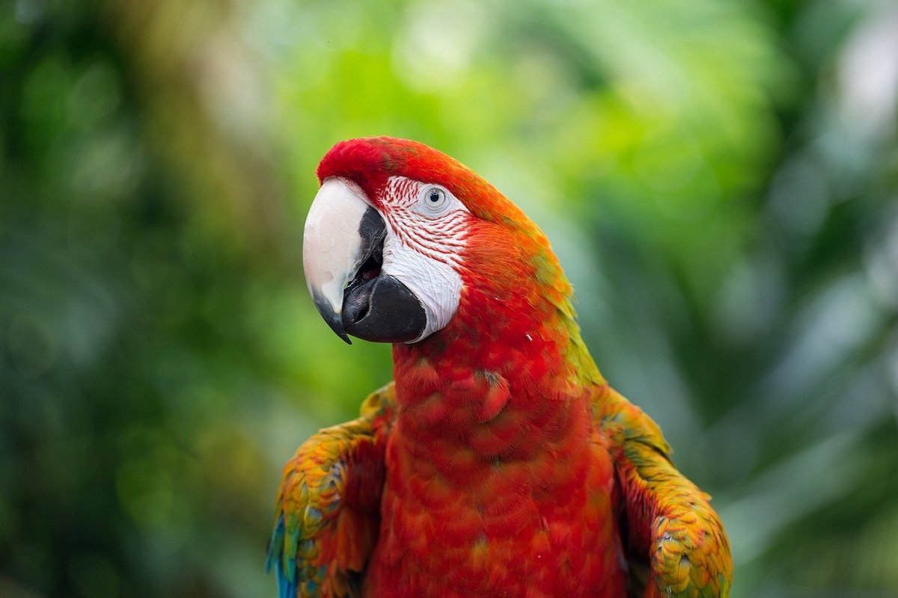

Über den Papagei
Papageien sind sehr farbige und intelligente Vögel, die in tropischen Regionen wie dem Amazonas leben. Sie sind bekannt für ihre Fähigkeit, Geräusche und sogar menschliche Sprache zu imitieren.
Lebensraum
Der Papagei lebt in tropischen Regenwäldern, besonders im Amazonasgebiet.